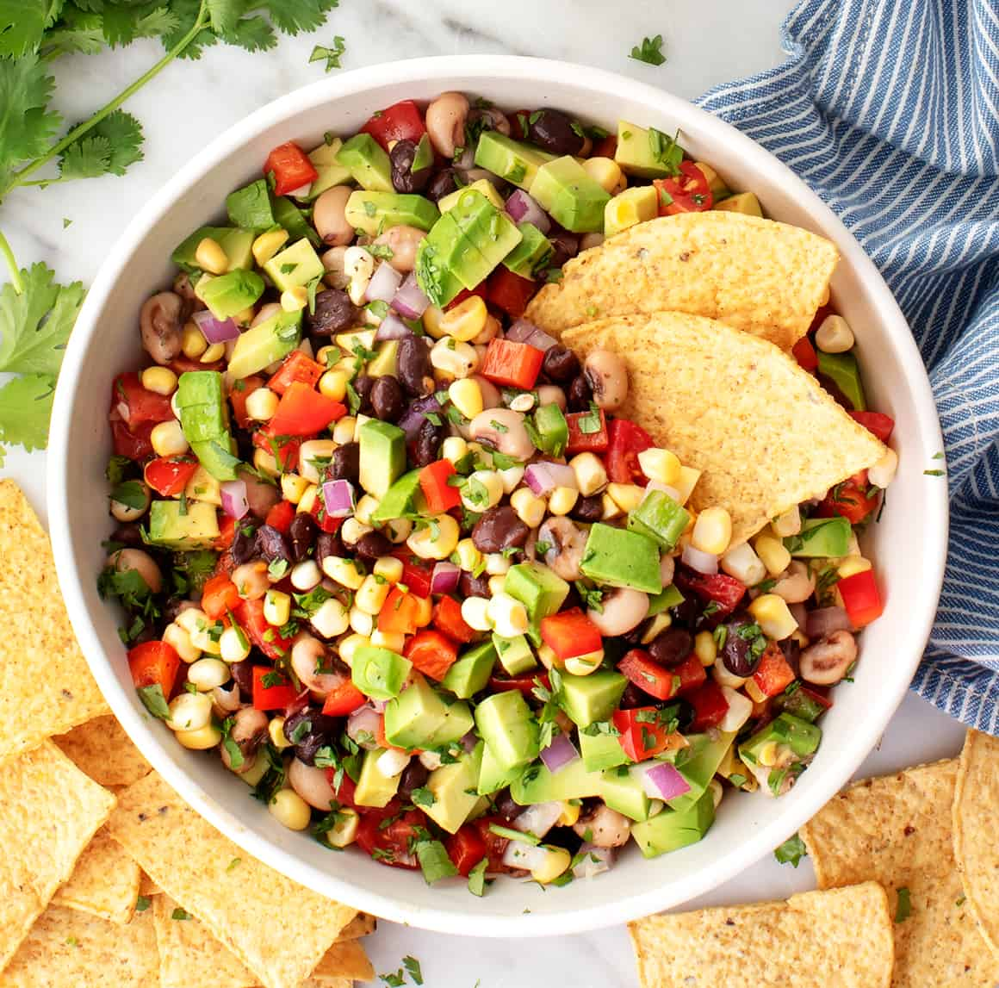

Cowboy Caviar

Cowboy Caviar is a mix of beans, corn, red onion, bell pepper, jalapeno,
as well as various herbs and spices to be served with tortilla chips.
Ingredients
- 1 can black eyed peas
- 1 can black beans
- 1 bag of frozen corns
- 1/2 a red onion
- 1 bell pepper
- 2 jalapenos
- 1/4 cup of olive oil
- 1/4 cup of red win vinegar
- 2 cloves of garlic
- 1/2 teaspoon of salt
- 1/2 teaspoon of pepper
- 1/2 teaspoon of paprika
- 1 teaspoon of chili powder
- Lime juice to taste
Steps
- Thaw corn for about an hour prior to prep.
- Cut up bell pepper and jalapenos.
- Drain and rinse both cans of beans.
- Add all the veggies to a large bowl, mix thoroughly.
-
In seperate bowl mix together all the wet ingredients to make a sauce.
- Add sauce to veggies and mix thoroughly.
- Serve with tortilla chips. Enjoy!